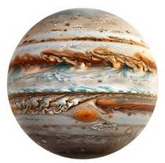

JUPITER

Júpiter es el quinto planeta desde el Sol, situado a una distancia media de aproximadamente 778 millones de kilómetros.
CARACTERÍSTICAS PRINCIPALES
SATÉLITES NATURALES
HISTORIA Y EXPLORACIÓN
Es el planeta más grande del Sistema Solar, con un diámetro de aproximadamente
139,820 kilómetros, más de once veces el diámetro de la Tierra.
Júpiter es un gigante gaseoso compuesto principalmente de hidrógeno (aproximadamente 90%) y helio (cerca del 10%), con trazas de otros gases como metano, amoníaco y vapor de agua.
La atmósfera de Júpiter está dividida en bandas de nubes paralelas de colores diferentes, que son visibles desde la Tierra.
Una de las características más famosas de Júpiter es la Gran Mancha Roja, una enorme tormenta anticiclónica que ha existido durante al menos 400 años. Esta tormenta es tan grande que podría contener dos o tres Tierras.
Júpiter es un gigante gaseoso compuesto principalmente de hidrógeno (aproximadamente 90%) y helio (cerca del 10%), con trazas de otros gases como metano, amoníaco y vapor de agua.
La atmósfera de Júpiter está dividida en bandas de nubes paralelas de colores diferentes, que son visibles desde la Tierra.
Una de las características más famosas de Júpiter es la Gran Mancha Roja, una enorme tormenta anticiclónica que ha existido durante al menos 400 años. Esta tormenta es tan grande que podría contener dos o tres Tierras.
- Io: Es el cuerpo más volcánicamente activo del Sistema Solar.
- Europa: Se cree que tiene un océano de agua líquida bajo su corteza de hielo, lo que la convierte en un candidato interesante en la búsqueda de vida extraterrestre.
- Ganimedes: Es la luna más grande del Sistema Solar y tiene su propio campo magnético.
- Calisto: Es una de las lunas más craterizadas del Sistema Solar, con una superficie antigua y rica en hielo.
- Europa: Se cree que tiene un océano de agua líquida bajo su corteza de hielo, lo que la convierte en un candidato interesante en la búsqueda de vida extraterrestre.
- Ganimedes: Es la luna más grande del Sistema Solar y tiene su propio campo magnético.
- Calisto: Es una de las lunas más craterizadas del Sistema Solar, con una superficie antigua y rica en hielo.
- Pioneros y Voyager: Las misiones Pioneer y Voyager proporcionaron las primeras
imágenes detalladas de Júpiter y sus lunas en la década de 1970.
- Pathfinder y Sojourner (1997): Primer rover en Marte.
- Galileo (1989-2003): Esta misión de la NASA fue la primera en orbitar Júpiter, proporcionando una gran cantidad de datos sobre el planeta y sus lunas.
- Juno (2011-presente): Actualmente, la misión Juno de la NASA está en órbita alrededor de Júpiter, estudiando su atmósfera, campo magnético y estructura interna.
- Pathfinder y Sojourner (1997): Primer rover en Marte.
- Galileo (1989-2003): Esta misión de la NASA fue la primera en orbitar Júpiter, proporcionando una gran cantidad de datos sobre el planeta y sus lunas.
- Juno (2011-presente): Actualmente, la misión Juno de la NASA está en órbita alrededor de Júpiter, estudiando su atmósfera, campo magnético y estructura interna.